From an OpenAPI spec to a reviewable MCP server — with a signed, verifiable certificate
AgentBridge is a self-hosted web platform: it analyzes your API, proposes AI-agent tools, generates an MCP server, attacks it with security checks inside an isolated sandbox, then grants — or rejects — a signed certificate bound to the artifact fingerprint.
- Apache-2.0 license
- Runs locally with no keys (mock LLM provider)
- For local evaluation — production operation is not supported in this version
Product type: a self-hosted web platform
AgentBridge is a web platform you host yourself — not an Android or iOS app, and not a desktop application. The apps/ directory means runnable application modules:
apps/api
The Fastify web server: REST, SSE, and the public verification endpoint.
apps/dashboard
The Next.js web dashboard you open in a browser: upload specs, watch the pipeline, HITL.
apps/cli
A command-line tool that runs the same pipeline on your local files.
Two ways to use it: (1) as a web service you run on your own machine or server and open in the browser, or (2) as a developer CLI over the open-source code.
Making the repository public does not start, host, or expose any service — no hosted instance of AgentBridge exists.
This website is not the platform
These pages are a static website for introduction and documentation. The full platform is what you run locally from the repository. The static site does not run:
- The Fastify API or backend SSE streaming
- PostgreSQL, Redis, or pgvector
- The Docker sandbox or full MCP generation and checks
- Real sign-in, or any secret or user-data storage
No forms, no trackers or analytics, no external requests — just pre-built, read-only files.
How it works
A deterministic eight-stage pipeline with a bounded repair loop: ingestion → analysis → tool design (with mandatory citations) → deterministic generation → hardening (12 static and 8 live checks in a restricted container) → evaluation → human review for sensitive tools (HITL) → certification. A score of 85+ with zero critical findings grants an "Agent-Ready Verified" certificate, signed with Ed25519 and bound to the SHA-256 fingerprint of the generated artifacts.

Architecture in brief
A modular monolith with hexagonal boundaries: packages/ are units behind ports with swappable adapters, extractable into services later; apps/ assemble them. The dependency rule is iron: the domain never depends on infrastructure, and deterministic-first — algorithms before model calls, with every LLM output passing Zod validation plus the truth layers.

Security and its limits, plainly
- Platform secrets come from the environment only, Zod-validated at boot; logs redact key-like patterns.
- Tenant keys stored as scrypt hashes; upstream credentials as AES-256-GCM envelopes.
- Live checks run in a container with a read-only root filesystem, a non-root user, and a localhost-confined network.
- Structural tenant isolation with row-level security and a restricted database role.
- Signed certificate plus a public verification endpoint behind a strict field whitelist.
Limits: the certificate documents one policy run, not absolute safety; the sandbox depends on your Docker host configuration; the general network-egress policy and external KMS are not implemented; and no production deployment of this system exists.
Self-host in two minutes (no keys)
CLI — the fastest way to try it
# requires Node.js ≥ 20 and pnpm
pnpm install
pnpm exec tsx apps/cli/src/main.ts \
--spec tests/fixtures/mini-petstore.yaml --out ./ab-outStage events print to the terminal, and ./ab-out contains the generated MCP server + certificate.json + badge.svg + events.ndjson. Exit code 0 = certificate granted, 2 = documented rejection.
The full platform (web service)
docker compose -f docker-compose.dev.yaml up -d # PostgreSQL+pgvector and Redis
pnpm --filter @agentbridge/infra exec prisma generate
pnpm --filter @agentbridge/infra exec prisma migrate deploy # on an empty database
pnpm --filter @agentbridge/api start # API on :3000
pnpm --filter @agentbridge/dashboard dev # dashboard on :3001Workspace and key creation runs through agentbridge-ops onboard-tenant (the raw key is written atomically to a file, never to logs). Full verified sequence and environment variables in the repository README.